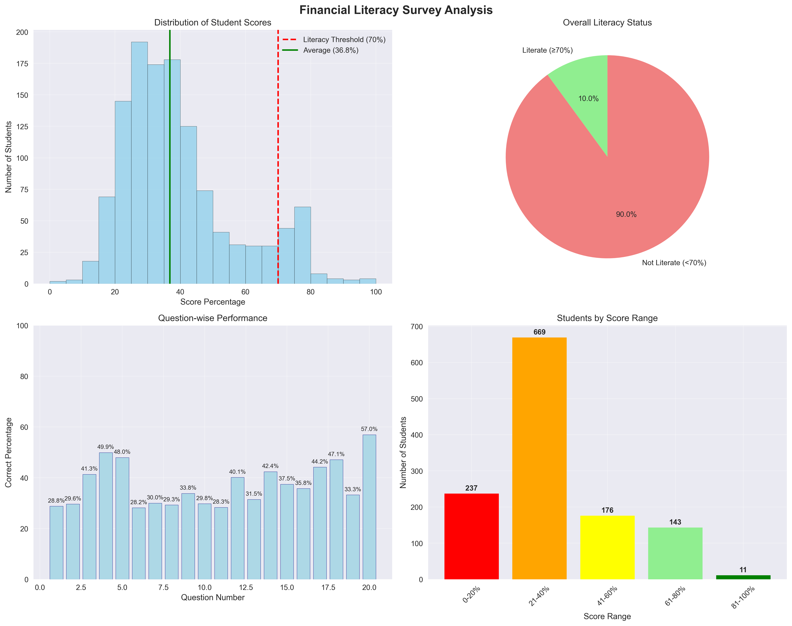
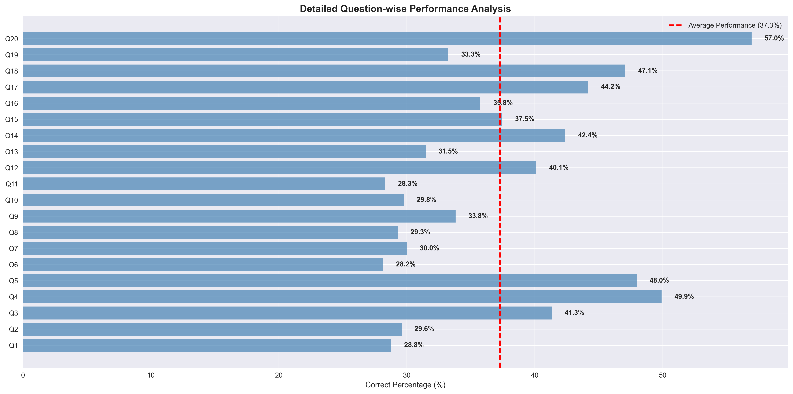

10.03%
Overall Financial Literacy Rate
124 out of 1,236 students met the 70% literacy threshold
🎯 Key Findings
1,236
Total Students Surveyed
124
Students Meeting Literacy Threshold
📈 Statistical Overview
- Highest Score: 100%
- Lowest Score: 0%
- Standard Deviation: 17.44%
- Most Common Score Range: 21-40% (54.1% of students)
📊 Score Distribution Analysis
| Score Range |
Number of Students |
Percentage |
Literacy Status |
| 0-20% |
237 |
19.2% |
Below Threshold |
| 21-40% |
669 |
54.1% |
Below Threshold |
| 41-60% |
176 |
14.2% |
Approaching |
| 61-80% |
143 |
11.6% |
Literate |
| 81-100% |
11 |
0.9% |
Highly Literate |
📈 Score Distribution Visualization

❓ Question-wise Performance Analysis
🏆 Best Performing Questions
| Question |
Topic |
Correct % |
Correct Answer |
Performance |
| 20 |
Responsible spending on wants |
57.0% |
B |
Excellent |
| 4 |
Financial literacy definition |
49.9% |
B |
Good |
| 5 |
Active income recognition |
48.0% |
B |
Good |
| 18 |
Entrepreneurial profit motive |
47.1% |
B |
Fair |
| 17 |
Gross profit calculation |
44.2% |
C |
Fair |
⚠️ Most Challenging Questions
| Question |
Topic |
Correct % |
Correct Answer |
Performance |
| 6 |
Passive income strategies |
24.4% |
A |
Critical |
| 1 |
Gross vs. net pay deductions |
24.9% |
C |
Critical |
| 8 |
Entrepreneurial ventures |
27.5% |
C |
Critical |
| 11 |
Long-term savings goals |
28.3% |
B |
Poor |
| 10 |
"Pay yourself first" principle |
29.8% |
B |
Poor |
📊 Detailed Question Performance

📈 Data Visualizations
The following visualizations provide comprehensive insights into the financial literacy survey results:
Overall Analysis Dashboard
This dashboard shows score distribution, literacy status, question performance, and score range analysis.
💡 Recommendations & Action Plan
Immediate Actions Required
- Develop targeted curriculum focusing on the lowest-performing question areas
- Implement comprehensive financial education programs for the 89.97% below literacy threshold
- Create interactive learning modules for complex concepts like passive income
- Address critical knowledge gaps in payroll understanding and entrepreneurial concepts
Priority Educational Areas
- Income Generation Strategies (Questions 6, 7) - Only 24.4-30.0% correct
- Basic Payroll Understanding (Question 1) - Only 24.9% correct
- Entrepreneurial Concepts (Questions 8, 18) - 27.5-47.1% correct
- Financial Planning (Questions 9, 10, 11) - 28.3-33.8% correct
- Consumer Decision-Making (Questions 13, 14, 15) - 31.5-42.4% correct
Long-term Strategies
- Implement quarterly financial literacy assessments to track progress
- Develop progressive learning pathways from basic to advanced concepts
- Integrate real-world scenarios and practical case studies
- Establish partnerships with financial institutions for practical learning
Success Metrics
- Target: Increase literacy rate from 10.03% to 50% within one year
- Monitor: Track improvement in lowest-performing question areas
- Evaluate: Regular assessment of educational intervention effectiveness
🎯 Conclusion
The financial literacy survey reveals a significant knowledge gap among students, with only 10.03% meeting the established literacy threshold of 70% or above. This represents a critical need for immediate educational intervention.
Key Takeaways:
- 89.97% of students require financial education support
- Critical gaps exist in income generation and payroll understanding
- Strong foundation in consumer awareness and basic financial concepts
- Clear roadmap for targeted educational interventions
The detailed analysis provides a comprehensive baseline for measuring financial literacy and establishes specific areas for educational focus. With targeted interventions addressing the identified knowledge gaps, significant improvements in financial literacy outcomes can be achieved.